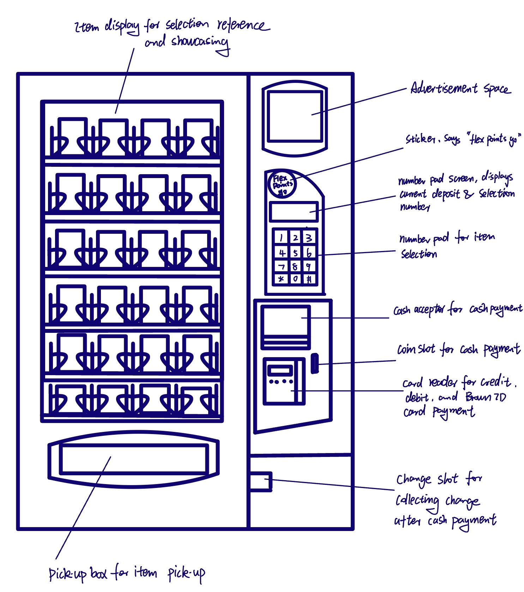
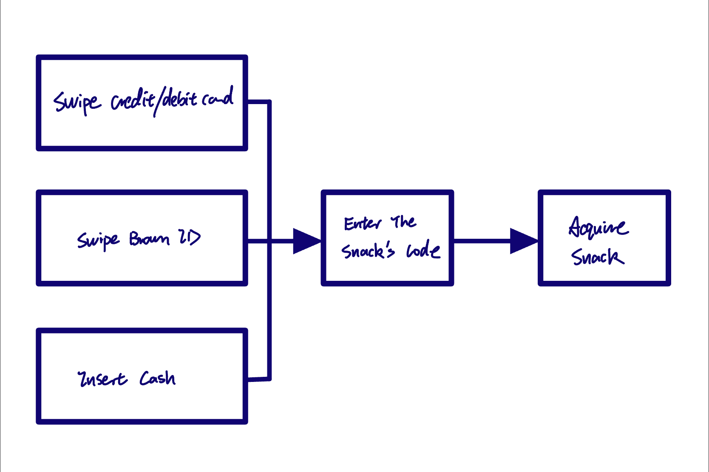

Vending Machine at Rockefeller Library Café: A Case Study on User Persona and User Journey
Introduction
Brown Students are always hungry: they always crave a fast and delicious snack. Vending machines are a great way to make the comfort of a quick snack accessible and fuel hundreds of empty stomachs throughout the day. However, the vending machines are under-utilized as the students seldomly frequent the machine unless necessary. Of course, the problem can be approached from the angle of food selection. In this case, I would like to explore the design aspect of the problem space and pinpoint the usability issues and user pain points when using the machine.
Objective
- Observe the actions, record the attitudes of the users who interact with the vending machine, and develop user personas and storyboards to better understand different users’ thinking processes, user journeys, needs, and pain points.
Impact
- Utilize the user personas and storyboards to construct a basic understanding of the vending machine’s user, which serves as a reference for possible design strategies.
Interface Basic Information
- For this project, I based my study on the vending machine located at Rockefeller Library Cafe. It can take in cash, credit/debit card, or Brown ID to sell a variety of snacks. The figure below shows different components and functionalities of the vending machine’s control panels on the right side.


- In summary, the user is expected to insert their payment method’s deposit first, then select the desired item, and lastly, acquire the item.
Research Method
- Observe the participants’ interactions with the vending machine and look for procedures they struggle with.
- Interviewed the participants, asking the following questions:
- What do you intend to buy?
- What payment method do you intend to use?
- What are your problems/frustrations when using the machine?
- If you were to change one thing about the machine what would you change?
- Other follow-up questions regarding their behavior/attitude
Sampling Information
- 3 Brown Undergraduate Students, one First-Year, two Third-Years
- They all used different payment methods, one used cash, one used a credit card, and one used a Brown ID.
Observation Details
- 1 out of the 3 participants came to the vending machine and typed in the number of the food first before depositing using their payment method.
- 2 out of the 2 participants who used cards had to bend over to swipe the cards and check the authorization status.
- The participant who used cash took a long time to find an item of their liking but left with nothing purchased
- The participant that used their Brown ID card hesitated before swiping the card on the card reader
Interview Details Details
- 2 out of the 3 participants expressed frustrations with the fact that the vending machine does not label the price of the snacks served.
- The participant who used cash intended to spend some of their remaining change, but they eventually left with nothing because they typed in multiple options and found out that they are all over budget
- The participant who used Brown ID expressed that they did so because they saw the “flex point go” sticker. However, they expressed that there was no sign that the card reader takes in Brown ID, which caused the hesitation.
- The participants who used the card reader all expressed dissatisfaction with its awkward positioning.
User Personas
Budget Barry is a Third-Year Student at Brown looking to spend some of his change on a quick snack (Illustration for Figma Plug-in, Artify)
Flex Point Felix is a First-Year Student at Brown unfamiliar with Brown’s vending machine systems, he is delighted to find out that the vending machine takes flex points (Illustration for Figma Plug-in, Artify)
Story Board for Budget Barry